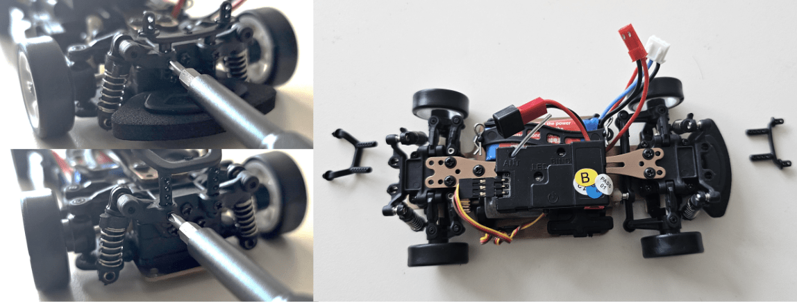
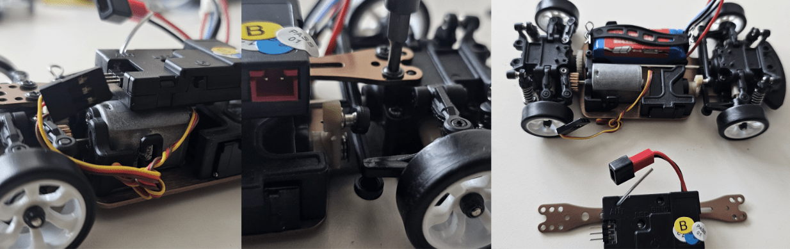
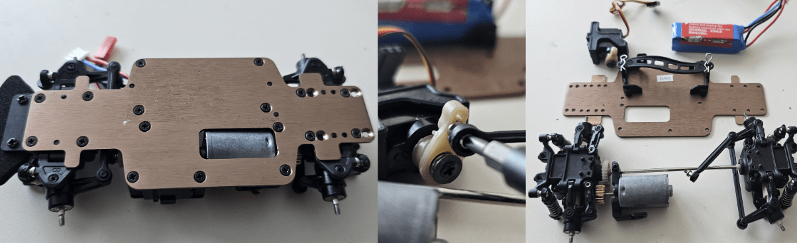
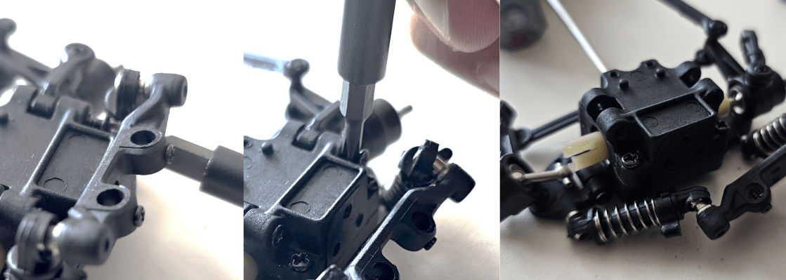
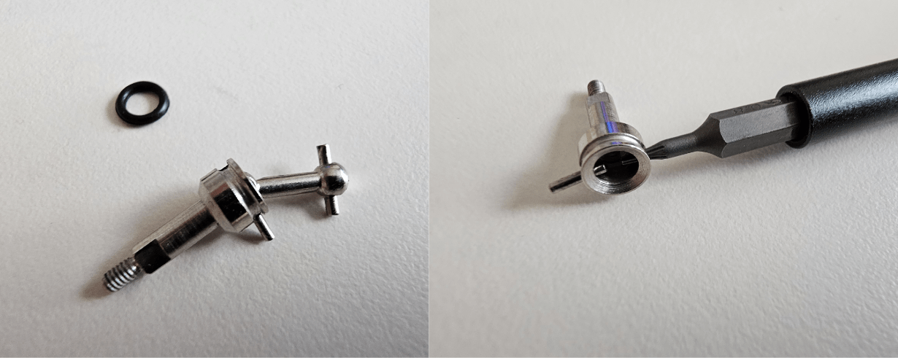

One of the most pressing challenges within autonomous mobility lies in high-speed racing scenarios where vehicles must interact and overtake at high speeds. These scenarios are particularly challenging because autonomous vehicles require advanced data-driven methods to identify the intent of other vehicles while simultaneously planning their trajectories. Although full-scale, high-speed testbeds such as Roborace exist, their space and cost requirements are highly demanding. To address these issues, we created Pocket Racer, an open-source, 1:28 scale autonomous racing platform designed for high-speed research that is accessible to everyone. Our platform operates in typical indoor environments like university hallways or classrooms, making high-speed autonomous driving research more accessible and feasible.
Building a scaled-down autonomous vehicle is quite a complex task. Please keep in mind the following considerations:
Although the material cost of building a vehicle is less than 250 USD, several tools are needed:
Thus, the real cost of having a fully-functioning vehicle can fluctuate (depending on which tools are readily accessible or not). Please keep this in mind before jumping immediately into the project.
We provide two primary methodologies for autonomous vehicle racing on our platform. These methods and their resources are detailed below:
Most of the code we use is in Python. Familiarity with deep learning frameworks is essential. While the project initially utilized Keras, we have transitioned to TensorFlow for better performance and deployment capabilities. PyTorch is also a viable alternative, given its recent advancements in deployment.
It is necessary to have access to a 3D printer. Because the parts are (at most) palm-sized, 3D printers around less than 100 USD (such as the Sondori Pico 3D printer) will be enough. We also recommend the Prusa Mini+ or MK3S+ with +0.02mm tolerance PETG filament if you are serious about getting quality prints. Knowing how to use Computer-Aided Design (CAD) is also necessary, provided that you are interested in making modifications to your vehicle in the future.
You should be able to understand how to use the following as well:
For detailed code, please visit our GitHub repository
Several materials are needed to successfully build a Pocket Racer autonomous vehicle. Our bill of materials will be periodically updated to reflect the latest revisions. Note that the cost of components does not include shipping costs. Additionally, there are a total of three methods for controlling the vehicle during data collection. The recommended method is the low latency option, as it offers the fastest communication protocols for real-time control and data collection.
If your RC’s stock tires have grooves/patterns or are not made of rubber, changing them to slick rubber tires is recommended to enhance tire grip. Equipping rims and tires for Kyosho Mini Z series work for this set. Remember to select rims according to the wheel hub’s shape, which is square for this set.
Print ‘Chassis.stl’ and ‘motormount.stl’ using 3d printer. Choose the highest fill rate possible to ensure rigidity for reducing impact on camera
Remove all the supports. Note that there is a slot at the back of camera holer for arducam’s CSI cable, and it can take time and effort to be destroyed.
This manual is based on Wltoys k969. You can also use the k989 or 284131 from Wltoys.

Disassemble cowl by detaching four R-shaped pins.
Unscrew cowl mounts at the front and rear.
Disconnect servo motor with the switch box.
Detach upper body plate by unscrewing the 5 points as shown.
Take all the wheels off.
Unscrew everything except battery holer and separate them from the lower body plate.
Take the battery out by removing R-shaped pin of the battery holder.
Solder the electronics according to this wiring diagram.
Unscrew shock absorber mount at the front.
Unscrew and pull out the bolts holding front upper arms.
Unscrew front differential case.
Remove front differential.
Get this front wheel hub assembly out of knuckle
Detach rubber ring.
Push the small shaft out to separate wheel hub from cv joint
Attach rubber ring to the wheel hub again and put it back into knuckle.
Do not assemble the front differential case again yet.
Unscrew toe control bar at the rear.
Unscrew rear shock absorber mount.
Unscrew and pull out bolts holding rear upper arms.
Unscrew and disassemble rear diff case.
Pull out the driveshaft and motor mount assembly from front and rear differential case.
Disassemble all the gears and motor mount assembly from drive shaft
Screw the new motor to the printed motor mount.
Assemble nylon gears to connect motor and driveshaft. Use the smallest gear (15T) for driveshaft and biggest one (24?T) for the motor.
Attach rear differential’s pinion gear to driveshaft.
Assemble rear differential system. Put the bearing holding the differential gear at the right place.
Screw shock absorber mount, rear differential case, rear upper arm and toe control bar.

Screw shock absorber mount, front differential case and front upper arm.
Put all the wheels back on.
Screw both differential cases, servo motor and motor mount to body plate. Put the battery back into battery holder.
Pull out the camera connector pin of arducam and change the CSI cable to white, thinner one.
Penetrate camera cable through the slot behind chassis head.
Push the arducam into the space of chassis head. Chassis can fix the camera rigidly enough without adhesive, but glue them if you need more rigidity.
The camera pin on pi zero board works just the same. Connect the other end of the camera’s CSI cable here.
Screw Raspberry pi 2w zero board on chassis using 4 M2 12mm screws and nuts.
Screw 5v dc fan on chassis using 4 M2 20mm screws and nuts.
Install esc to chassis using adhesive.
Screw chassis to RC
Screw chassis to RC
It is optional. However, using grip tires is highly recommended since the Pocket Racer is designed to race indoors.
Using a wheel wrench is ideal to screw / unscrew wheels. However, you can also use a long nose plier, too.
If it’s hard to get the specific motor, you can use another sensored BLDC motor as long as it can endure 30A current from.the ESC.
The one you printed is the latest version of the motor mount. It has multiple holes for mounting the motor to allow using different gear ratios.
Although the chassis have holes for all the bolting places, but the chassis is printed nearly 100% fill. It might be hard to bolt on the chassis, especially at the step where you mount chassis on differential covers. I recommend tapping the hole using M2 screws first, and then applying socket set screws for precise bolting.
Wheel hub can be fixed to knuckle when a wheel nut is applied on it. You can put the wheel on in advance if needed.
python3 collect.py`.python3 final3d.py`.sudo nano final3d.py`.